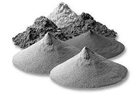
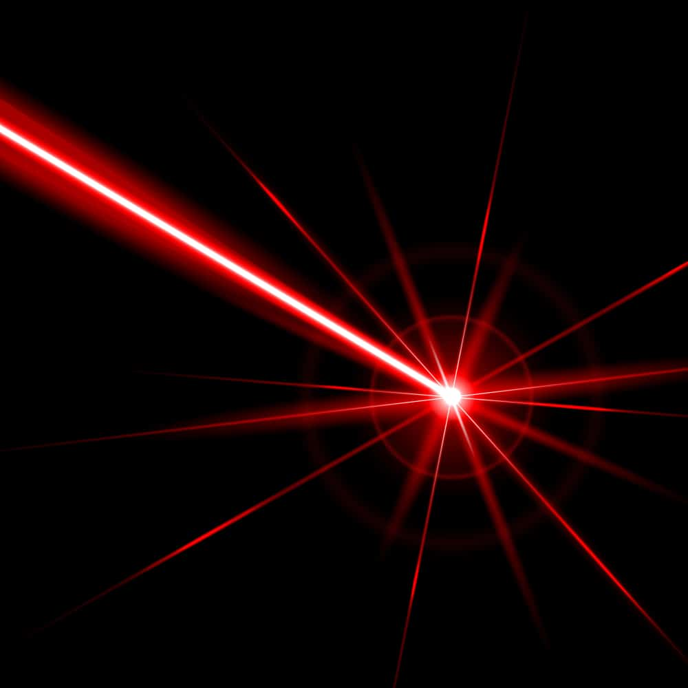
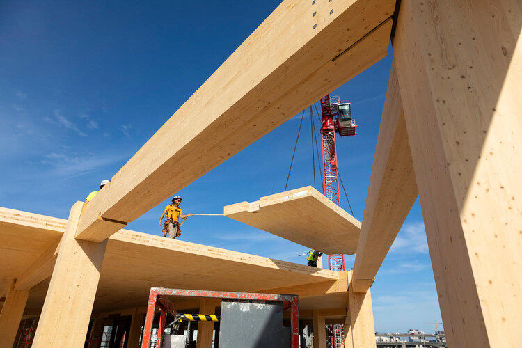
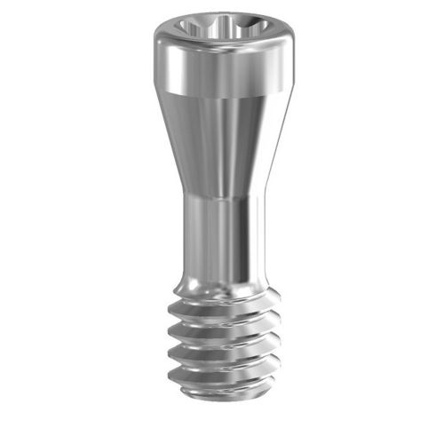
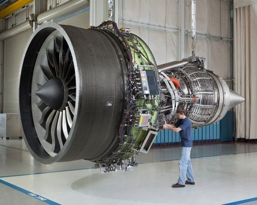
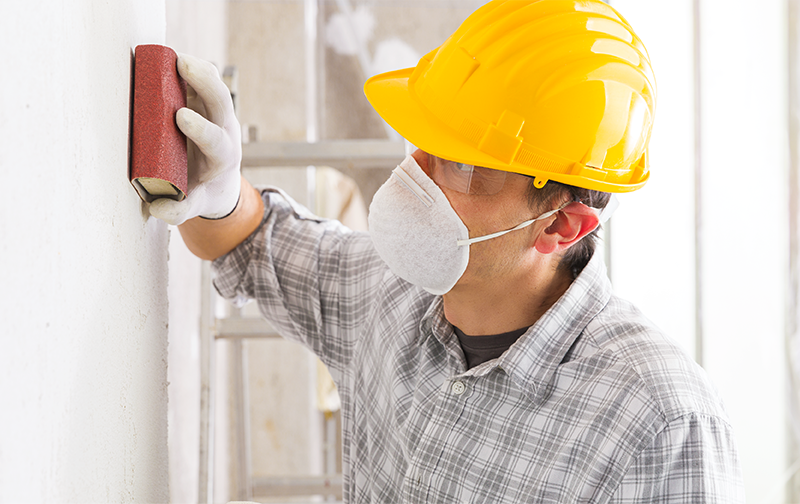
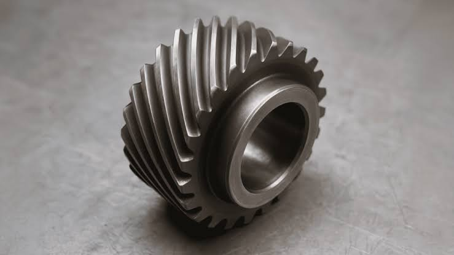
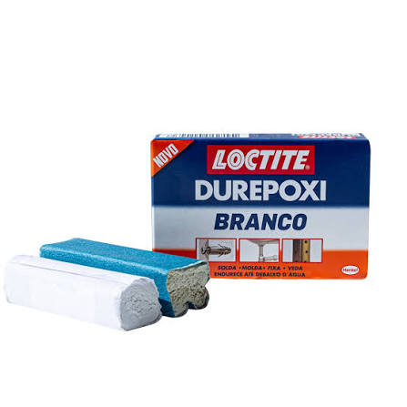
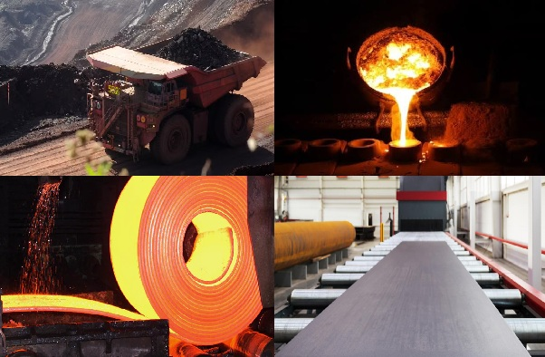

O que é Impressão 3D em Metal?
A impressão 3D em metal, também chamada de manufatura aditiva metálica, é um processo que constrói peças tridimensionais camada por camada a partir de pó metálico ou filamento. Diferente da usinagem tradicional, que remove material de um bloco sólido, essa técnica adiciona material, permitindo criar geometrias complexas que seriam impossíveis ou muito caras de produzir com métodos convencionais.
Como funciona?
O processo mais comum usa um laser ou feixe de elétrons para fundir seletivamente camadas finas de pó metálico. A cada camada, uma nova porção de pó é espalhada e fundida sobre a anterior, até que a peça esteja completa.

Máquina de impressão 3D em metal com pó metálico.
Principais Tecnologias
Existem várias técnicas de impressão 3D em metal, cada uma com suas particularidades de precisão, velocidade e custo:
- SLM (Selective Laser Melting): fusão seletiva a laser, uma das mais usadas.
- EBM (Electron Beam Melting): usa feixe de elétrons, boa para titânio.
- DED (Directed Energy Deposition): deposição direta de energia, ideal para reparos.
- Binder Jetting: aglutinante sobre pó seguido de sinterização.

Peça metálica complexa pronta após a impressão.
Galeria de Imagens
Explore abaixo mais imagens sobre o tema. Cada uma ilustra um aspecto diferente da impressão 3D em metal.








Explore a imagem mapeada
A imagem abaixo está mapeada (<map>): clique nas regiões
para ir às seções correspondentes da página.

Fluxo do processo — clique nas regiões para navegar.
Aplicações no Mercado
A tecnologia é amplamente usada em setores que exigem peças leves, resistentes e com geometrias complexas:
- Aeroespacial: componentes de turbinas e estruturas leves.
- Medicina: próteses e implantes sob medida.
- Automotivo: prototipagem e peças de alta performance.
- Petróleo e gás: peças de desgaste personalizadas.
Demonstração do processo de impressão 3D em metal.
Vantagens e Desafios
Vantagens
- Liberdade de design e geometrias complexas.
- Redução de desperdício de material.
- Produção de peças em menor tempo para protótipos.
- Produção de peças únicas ou sob medida.
Desafios
- Custo elevado dos equipamentos e materiais.
- Necessidade de pós-processamento (acabamento, alívio de tensões).
- Requer mão de obra especializada.
Etapas do pós-processamento de peças metálicas.